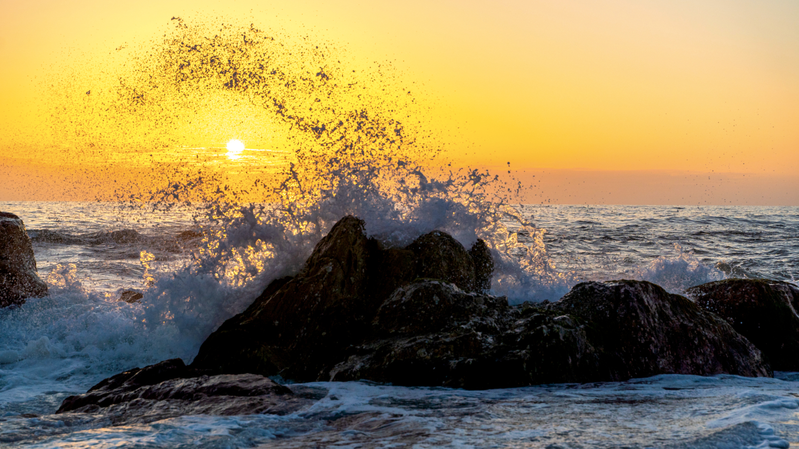
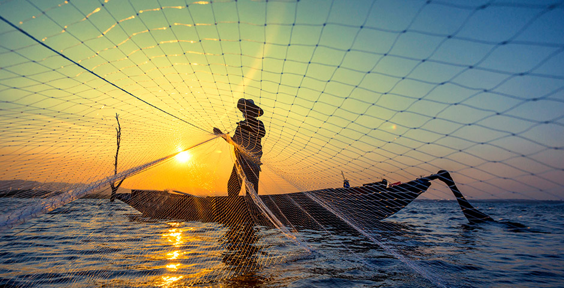
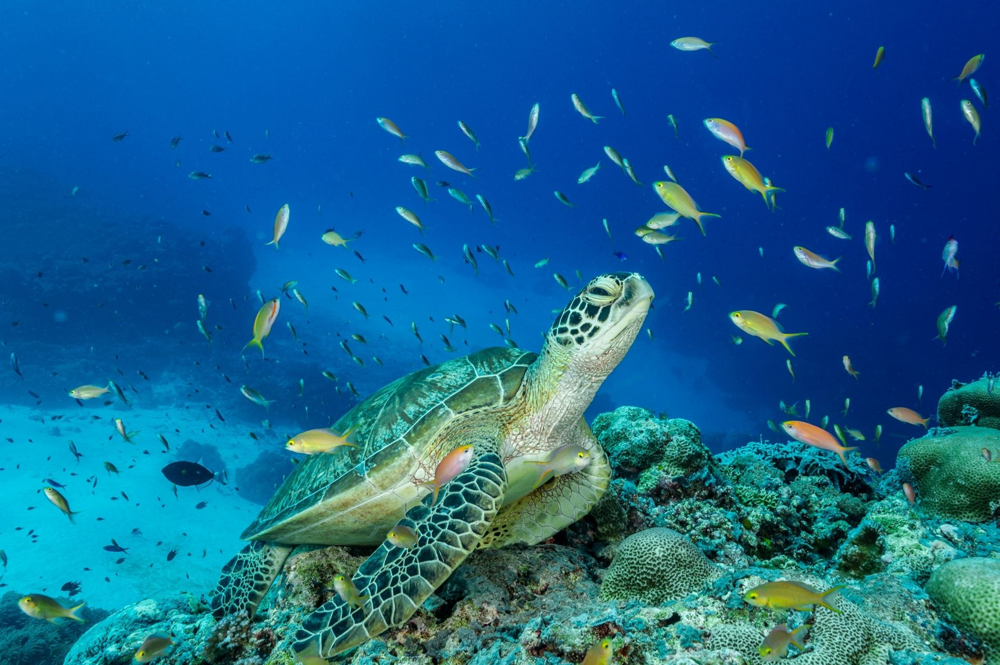

Contaminación marina
Millones de toneladas de residuos llegan al océano cada año. El plástico, especialmente el de un solo uso, daña especies marinas, contamina el agua y afecta la salud de los ecosistemas.
OBJETIVO DE DESARROLLO SOSTENIBLE
El ODS 14 busca conservar y usar de forma sostenible los océanos, mares y recursos marinos. Cuidar el océano es cuidar el clima, la alimentación y la biodiversidad.
Millones de toneladas de residuos llegan al océano cada año. El plástico, especialmente el de un solo uso, daña especies marinas, contamina el agua y afecta la salud de los ecosistemas.
Los océanos absorben calor y dióxido de carbono, pero el aumento de emisiones provoca calentamiento, acidificación y aumento del nivel del mar. Esto amenaza corales, especies marinas y comunidades costeras.

Arrecifes de coral, manglares, humedales y pastos marinos cumplen un papel clave en la protección de las costas y en la conservación de la biodiversidad. Su deterioro pone en riesgo especies, comunidades costeras y recursos naturales.

Los océanos absorben parte del calor atmosférico y del dióxido de carbono generado por la actividad humana. Sin embargo, el aumento de emisiones provoca acidificación, calentamiento y aumento del nivel del mar.

La pesca excesiva y la pesca ilegal reducen las poblaciones de peces. Esto afecta la biodiversidad, la alimentación de muchas personas y el trabajo de comunidades que dependen del mar.

Cuando el turismo en playas y costas no se organiza de forma responsable, puede generar contaminación, dañar recursos naturales y afectar a las comunidades e industrias locales.
Acción 01

Adoptar hábitos de consumo más responsables, reducir envases descartables y reutilizar materiales ayuda a disminuir los residuos que pueden llegar a ríos, costas y océanos.
Acción 02

Las jornadas de limpieza de playas, ríos y costas son una forma directa de colaborar con la protección de los ecosistemas marinos y generar conciencia ambiental.
Acción 03

Elegir productos del mar provenientes de prácticas sostenibles contribuye a combatir la sobrepesca y a proteger especies marinas.

Disminuir el uso de combustibles fósiles y apoyar energías renovables ayuda a enfrentar el cambio climático, uno de los factores que más afecta la salud de los océanos.

Compartir información sobre la importancia de los océanos permite que más personas comprendan el problema y se sumen a acciones de protección marina.